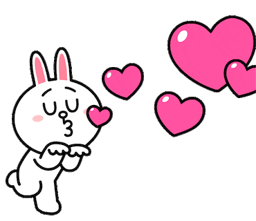

To You!
लाखों चेहरे हैं इस दुनिया में
लेकिन हमे बस एक तुम्हारा चेहरा ही नजर आता है,
और किसी को देखने की फुर्सत नही,
क्योंकि तुम्हारी याद में ही ये वक्त गुजर जाता है।💔
Hey Garima,
I don’t know what you think about me but you are the best part of my life, may be one day I will also become in your life too.Hope One day you will feel as same as mee. I know I am not perfect and I also don’t know to express my feelings but you really mean a lot for me, I really care for you and remembering you in every moment of my life. I just want to do endless talks with you spend my Quality time with you vaise mere pass kehne ko kuch nahi hota but baat karne k man karta hai infact I like the way you are explain everything, your gestures, even everything in my view you are perfect. Mujhe har baar apne aap se gussa aata hai jab aap mere se naraz hote ho ki why I act like that.
I will try my best to give all my efforts that make you feel how you are special for me. I may be not good person but I will say if you trust me, you will never regret in your life and hope you will understand me when you spend more time with me how I am.
I have seen your insta status I don’t know apne kiske liye lagaya but I am clearing my points.
You called me non-chalent but I am not kyunki mujhe fark padta hai aur mere non chalent way me answer karne ke reasons hai but aap mind mat karna.
1. I want to respect your decisions on that day you said mai apne friend ke saath joaungi to maine kaha thk hai jaisa apko sahi lage kyunki ye decision apko lena hai, mujhe kya mai to jaisa bologe vaisa kar lunga.
2. I am deeply connected with you even vo sab karna chahta hun jo apko accha lagta hai jitna mere se ho payega aur I wanna build my career so that aage mai sab kuch kar paun jo bhi requirements ho but abhi mere pass thodi responsibilities jada hai due to some reasons but I am pretty sure that I can achieve each and everything.
3. Mai kuch bhi karta hun apka koi na koi friend vo kar chuka hota hai and aap sochte ho maine usko dekh ke kara hoga, ya kisne better kara so that make me little upset that I want to do with my emotion ki sayad ye chiz apko pasand ho and I am still doing analysis whats your fav and what is not.
4. I am having very few friends who are girls and if you don’t like I will end connection with them. I don’t want to say that but I am saying, you have too many friends in your life that make me little anxious and upset too you know what I mean but it’s your decision I can’t say anything.
So, If I got certainty that whatever I am doing is in correct path because I do not want to do time pass with anyone and you should also have trust on me then you will see not see non chalant behaviour.
In my view a person is in love can’t be dominant cause he/she has to respect the feeling of each other. he will dominant for others but not for their loved ones as once start dominating the feeling will start decreasing and other one tries to escape from that relation so there should be proper balance.
I am totally affectionate towards you but vahi express karne me locha hai.
Obviously, you are totally gorgeous everything is so perfect.
Obsession vo to aap khud samjhoge some peoples make too many calls and messages but I think disturbing some one due to my obsession is not good other person also having their life goals and limited time in a day. when you meet them spend your quality time that’s it. And I am too.
You know mere apke liye koi bhi galat intentions nahi hai bas aap mujhe acche lage, and I am pretty sure that no any other girl can say you that the way I am talking to you similarly I talked but jisse bhi baat ki hai friend hai usi vajah se ki hai but aage se bilkul bhi nahi karunga.
Mujhe nahi pata aap ke man me kya chal raha hai,aap mere bare me kaisa sochte ho kyunki apne kabhi clear kiya hi nahi. I know mai utna accha nahi but jo emotions hai vo pure hai bas itna samjh lijiye, i know har ladki chahti hai ki uske saath vala successfull ho and I am trying too.
Hope you are understand me and my emotions and please help me clear whether I am in wrong way or right way of my life.
Ye websites banane me kafi time lagta hai or mai thoda ab career ka bhi soch raha hun to jada nahi beech beech banata rahunga ye aap mat sochna ki interest nahi reh gaya is liye nahi bana raha, you are my all time favourite and maine aaj tak kisi ke liye websites nahi banaya.
